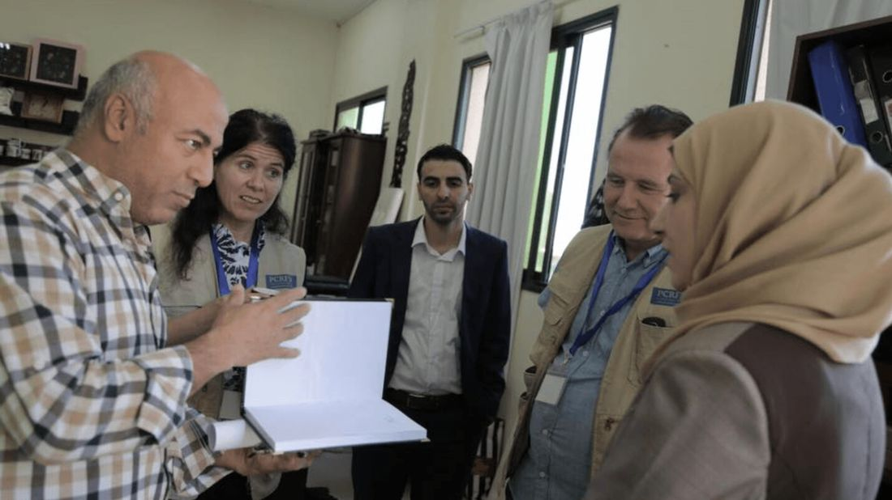
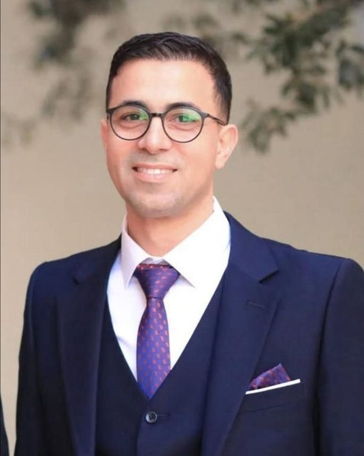
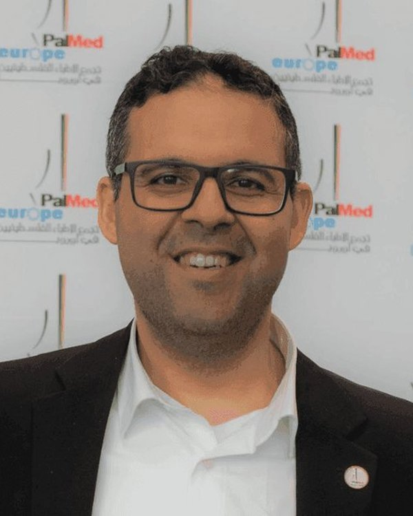
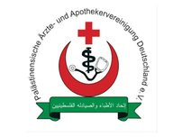
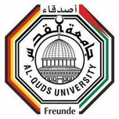
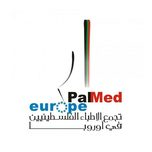
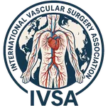

7Nov
7Nov
Wiederaufbau des Gesundheitssektors in Gaza
Unterstützung beim Wiederaufbau der medizinischen Infrastruktur – darunter die Dialyse-Einheit des Al-Shifa-Krankenhauses.
WeiterlesenDas Deutsch-Palästinensische Ärzteforum vereint medizinische Fachkräfte aus ganz Deutschland – für Wissensaustausch, Fortbildung und lebensrettende humanitäre Projekte in Palästina und weltweit.
Per Überweisung an unser Vereinskonto oder bequem per PayPal. Gemeinnützig und steuerlich absetzbar.

Das Deutsch-Palästinensische Ärzteforum (PalMed Deutschland) wurde 2007 von palästinensischen Medizinerinnen und Medizinern in Deutschland gegründet. Als neutrales, unpolitisches Forum verfolgen wir ausschließlich medizinische und humanitäre Ziele.
Wir vernetzen Ärztinnen, Ärzte, Apothekerinnen und Apotheker, fördern den fachlichen Austausch und organisieren Fortbildungen, Kongresse und humanitäre Hilfseinsätze – von der Entsendung chirurgischer Expertenteams bis zur Lieferung von Medikamenten und medizinischen Geräten.
Mehr über uns erfahrenLebensrettende Einsätze, Medikamente und medizinische Geräte für Krankenhäuser in Krisengebieten – von Gaza bis in die Westbank.
Ein internationales Netzwerk hochqualifizierter Fachärztinnen und Fachärzte für Wissensaustausch über Grenzen hinweg.
Praxisorientierte chirurgische Workshops und Trainingsprogramme – in Deutschland und vor Ort in Palästina.
Wissenschaftliche Jahreskongresse und Diskussionsforen – seit 2007 jedes Jahr, zuletzt der 19. Jahreskongress zum Thema Resilienz im Gesundheitssystem.
Unsere Projekte reichen vom Wiederaufbau zerstörter Kliniken bis zur Ausbildung der nächsten Generation von Medizinern.
7Nov
Unterstützung beim Wiederaufbau der medizinischen Infrastruktur – darunter die Dialyse-Einheit des Al-Shifa-Krankenhauses.
Weiterlesen 19Jan
19Jan
Erneute Entsendung eines medizinischen Expertenteams für Operationen, Sprechstunden und Schulungen vor Ort.
Weiterlesen 19Jan
19Jan
Jahrestreffen der PalMed Academy – Austausch, Fortbildung und Planung der kommenden Programme.
WeiterlesenSieben Ehrenamtliche, alle zwei Jahre neu gewählt – von der Viszeralchirurgie bis zur Klinischen Pharmazie.

Facharzt für Neurochirurgie

Facharzt für Thoraxchirurgie

Facharzt für Innere Medizin und Kardiologie
Hier finden Sie Antworten auf die am häufigsten gestellten Fragen über PalMed.
PalMed ist ein neutrales, unpolitisches Forum mit rein medizinischen Zielen. Wir möchten palästinensische Ärztinnen, Ärzte, Apothekerinnen und Apotheker in Deutschland vernetzen, aktiv einbinden und ihnen eine Plattform für wissenschaftlichen und beruflichen Austausch bieten. Darüber hinaus unterstützen wir medizinische Einrichtungen in Palästina und motivieren zu humanitären Einsätzen.
PalMed organisiert jährliche Kongresse seit 2007, bei denen palästinensische und deutsche Ärzte zu medizinischen Themen referieren. Wir nehmen an Fortbildungsveranstaltungen teil, liefern Hilfsgüter und medizinische Geräte nach Gaza, ins Westjordanland und in Flüchtlingslager, bilden palästinensische Ärzte in Deutschland fort und organisieren regelmäßig Fußballturniere und Familienfeste.
In Deutschland leben rund 4.000 palästinensische Ärztinnen und Ärzte. PalMed möchte sie vernetzen und ihnen eine gemeinsame Plattform für wissenschaftlichen und beruflichen Austausch bieten.
Nein, PalMed ist ein neutrales, unpolitisches Forum. Angesichts der angespannten politischen Lage haben wir uns bewusst für eine unpolitische Ausrichtung entschieden und verfolgen ausschließlich medizinische und humanitäre Ziele.
Sie können Mitglied werden, indem Sie den Aufnahmeantrag ausfüllen. PalMed ist als gemeinnütziger Ärzteverein eingetragen und steht allen palästinensischen Ärzten und Apothekern in Deutschland offen.
Ja. PalMed Deutschland ist als gemeinnütziger Verein anerkannt. Für Spenden bis 300 € genügt dem Finanzamt Ihr Kontoauszug – darüber stellen wir Ihnen gerne eine Zuwendungsbestätigung aus. Schreiben Sie uns dazu einfach mit Ihrem Namen und Ihrer Anschrift.
Sie können PalMed durch Mitgliedschaft, Spenden oder aktive Teilnahme an unseren Projekten unterstützen. Wir suchen immer nach Ärzten, die bereit sind, an humanitären Einsätzen in palästinensischen Einrichtungen teilzunehmen.
Haben Sie weitere Fragen? Kontaktieren Sie uns
Wir arbeiten unter anderem mit diesen Organisationen zusammen.




Gemeinsam können wir die medizinische Versorgung verbessern – als Mitglied, mit einer Spende oder durch Ihre Expertise.